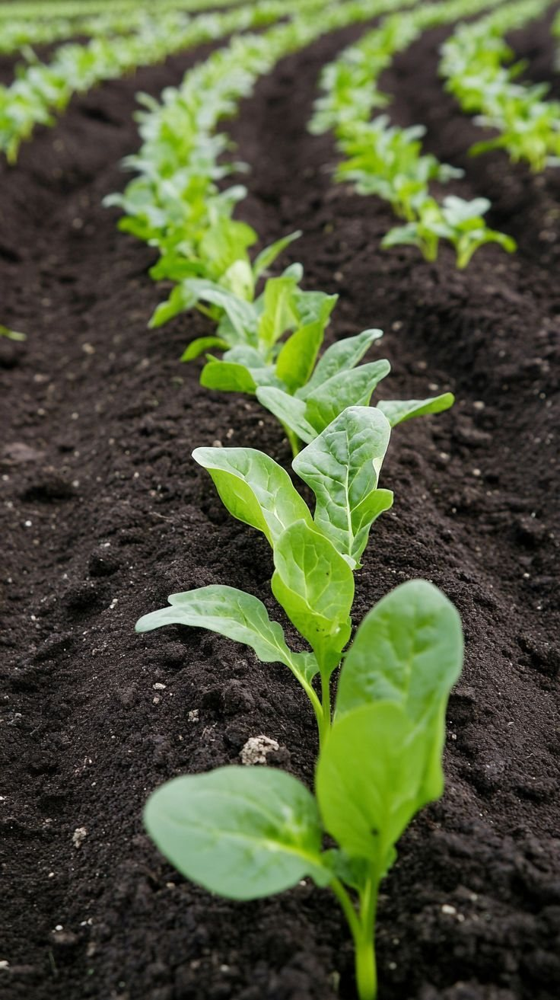

시비 처방
작물과 면적, 검정값을 넣으면 질소 · 인산 · 칼리 · 퇴비 · 석회의 양과 20 kg 포대 수를 계산합니다.
처방 계산
작물별 기준 시비량
| 작물 | 질소 | 인산 | 칼리 | 퇴비 |
|---|---|---|---|---|
| 벼 | 9 | 4.5 | 5.7 | 1,000 |
| 고추 | 19 | 11.2 | 14.9 | 2,000 |
| 배추 | 32 | 7.8 | 19.8 | 1,500 |
| 감자 | 10 | 6 | 12.4 | 2,000 |
| 사과 | 10 | 5 | 8 | 2,000 |
| 텃밭 채소 | 15 | 8 | 10 | 2,000 |

계산 방법
- 인산 · 칼리
- 적정 범위보다 낮으면 최대 +50 % · 높으면 최대 −50 % · 상한의 2배를 넘으면 0
- 질소
- 보정 없음 · 기준량 그대로
- 석회
- (6.5 − pH) × 갈래별 계수 · 사질 100 · 양질 150 · 식질 200 kg/10a
- 포대
- 요소 질소 46 % · 용과린 인산 20 % · 염화칼리 칼리 60 % · 20 kg 포대, 올림
단순화한 근사 계산입니다. 실제 처방은 성적서의 시비 처방을 따릅니다.